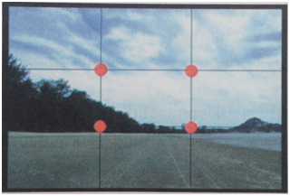
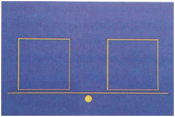

เทคนิคการจัดองค์ประกอบภาพ
ทฤษฎีกฎสามส่วน (Rule of Third) เป็นวิธี ง่ายๆ ที่จะทำให้ภาพออกมาดูดี โดย หลีกเลี่ยงการวางจำแหน่งของวัสดุหลักที่เราจะถ่ายไม่ให้อยู่ตรงจุดกึ่งกลางภาพ ซึ่งจะทำให้ภาพนั้นเเข็งทื่อ ไม่ ชวนมอง ดังนั้น ตำแหน่งที่เหมาะสมต่อการวางวัตถุ ควรอยู่ในตำแหน่งที่เกิดจากจุดตัดต่อของเส้นสี่เส้นตามทฤษฎีกฎสามส่วน ซึ่งการจัดวางตำเเหน่งหลักของภาพถ่ายเป็นองค์ประกอบหนึ่งที่สามารถทำให้เกิดผลทางด้านเเนวความคิดเเละความรู้สึกได้
วิธีการ คือ ให้สร้างเส้นสมมติ 4 เส้น เพื่อแบ่งช่องมองภาพทั้งเเนวตั้ง 2 เส้น เเละเเนวนอน 2 เส้น เหมือนกับตีตารางเล่น x-o จุดที่เส้นทั้ง 4 ตัดกัน คือ ตำแหน่งที่เหมาะสมต่อการวางวัตถุหลักไว้ในบริเวณดังกล่าว

ความสมดุลของภาพ
การจัดองค์ประกอบภาพด้วยการจัดความสมดุลให้กับวัตถุหรือสิ่งต่าง ๆ ในภาพโดยอาศัยการรับรู้ถึง "น้ำหนัก" และตำแหน่งของวัตถุต่างๆ ที่อยู่ภายในภาพนั้น 7 โดยอาศัยหลักการ คานดีด - คานงัด โดยมีตำแหน่งกึ่งกลางภาพเป็นจุดศูนย์กลางของตัวคานน้ำหนัก
การรับรู้น้ำหนักของวัตถุจากคนดู ขณะดูภาพ

วัตถุขนาดใหญ่จะมีน้ำหนักในภาพมากกว่าวัตถุที่มีขนาดเล็ก แต่ถ้าวัตถุที่มีขนาดเล็กกว่าวางในจุดที่อยู่ห่างออกไปจากจุดกึ่งกลางของคานในตำแหน่งที่เหมาะสมเละน้ำหนักได้มากยิ่งขึ้นกว่าปกติเพื่อนำมาถ่วงดุลกับวัตถุที่มีขนาดใหญ่กว่าที่อยู่ด้านหนึ่งของคานได้
การรับรู้ถึงน้ำหนักมาก
1) วัตถุมีขนาดใหญ่
2) วัตถุมีสีเข้ม
3) ตำแหน่งของวัตถุอยู่ห่างจากจุดกึ่งกลางภาพ
การรับรู้ถึงน้ำหนักน้อย
1 ) วัตถุมีขนาดเล็ก (หรือเป็นที่ว่างในภาพ)
2) วัตถุมีสีอ่อน
3) อยู่ใกล้กับจุดศูนย์กลางของภาพ
ดังนั้น ในการจัดองค์ประกอบของภาพนั้น นอกจากจะต้องคำนึงถึงกฎสามส่วนแล้วควรจะนึกภาพตาช่างเสมือนไว้ในใจเสมอ โดยพยายามวางวัตถุต่าง ๆ เพื่อให้มีการถ่วงดุลไม่จำเป็นต้องเอาวัตถุใหญ่ ๆ 2 อันมาวางไว้ทั้ง 2 ด้านของคานเพื่อให้น้ำหนักหรือสมดุลเท่ากัน แต่เขียนเรื่องของความเหมาะเจาะพอดีของ (ขนาดวัตถุ/ สีสัน / โทนความเข้มอ่อนของวัตถุ) ก็ได้
 
|